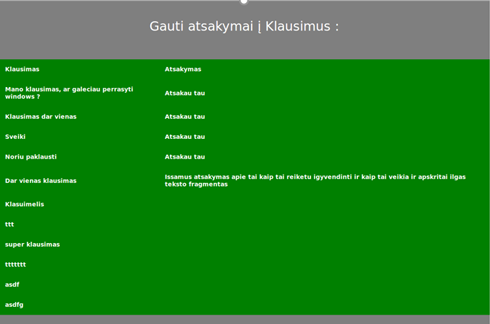

Smartphone Help - PHP Consultancy Website
Learned :
Vanilla PHP Web service development
Designing a web-service system
The System is composed of 3 subsystems : Administrator subsystem, Client subsystem and Worker subsystem.
Each of the systems has their own rights to access certain functions within the system and are prevented
from accessing other parts of the system.
The Administrator subsystem is designed to handle basic CRUD operations with the User database. Additionally
managing the CREDIT system (virtual in-app currency), directly updating the main page FAQ section and VIDEO
section editing.
The Worker subsystem is designed for the employees of the company. It's main component is the messaging interface.
Each employee gets their set of questions provided by the customers and can be given a rating based on their
performace.
The employees have the ability to change their activity status which is then presented to the customers. This way
both parties know when there is an ability to reach someone faster. The system allows workers to receive
feedback in the form of rating out of ten.
The Client subsystem is designed mainly to ask question and receive answers on a particular topic. The CREDIT system
goes into play here as it doesn't let users ask question if their CREDIT funds are completely depleted.
Clients then have to go to the BUY CREDITS section and get more virtual currency to be able to ask questions again.
Although CREDITS are 0, the users can still see their previous questions and receive answers if not yet received.
Only the question part of the system is restricted.
